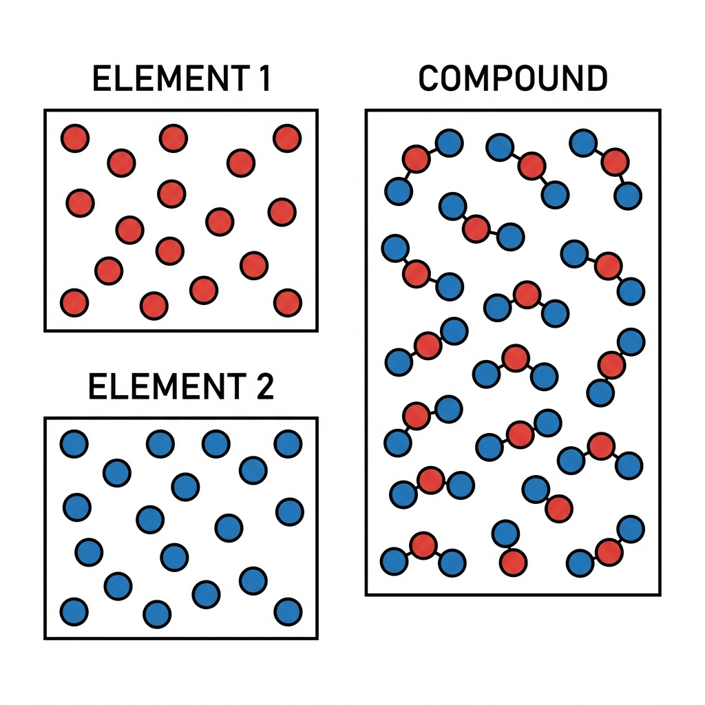
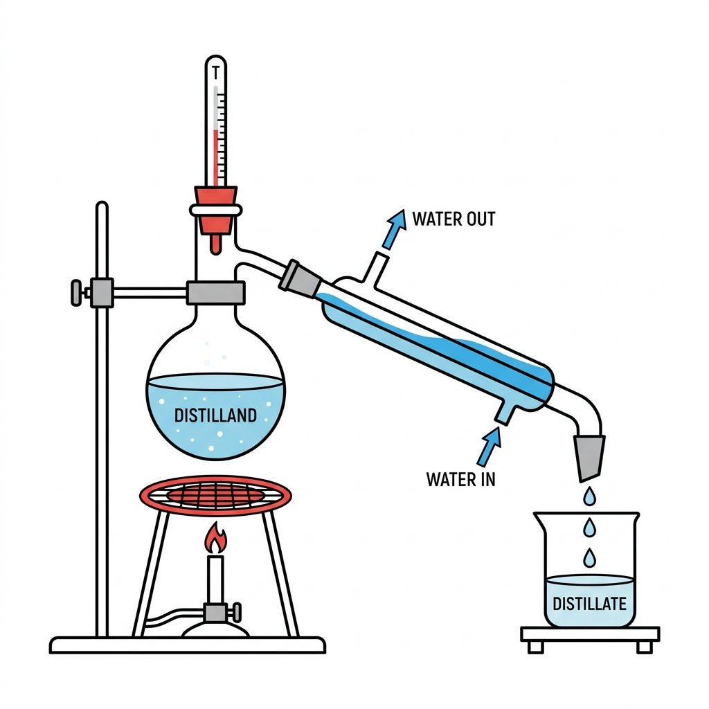

Vardaan Learning Institute
Class 8 Chemistry • Chapter Notes
🌐 vardaanlearning.com
📞 9508841336
3. ELEMENTS, COMPOUNDS AND MIXTURES
1. Introduction & Classification of Matter
Millions of substances exist in the Earth's crust in a free state as well as in combined states. To study them systematically, matter can be chemically classified into two broad categories: Pure Substances and Impure Substances (Mixtures).
- Pure Substances: Have a definite chemical composition and definite physical/chemical properties. They are homogeneous (uniform throughout). Examples: Elements and Compounds.
- Impure Substances (Mixtures): Made up of two or more pure substances mixed in any proportion. They do not have a definite set of properties and can be homogeneous or heterogeneous.
2. Elements
Definition
An Element is a pure substance which cannot be converted into anything simpler than itself by any physical or chemical process. It is made up of only one kind of atoms.
Characteristics of Elements
- They are the simplest type of pure and homogeneous substances.
- They cannot be broken down into simpler substances.
- They have fixed melting and boiling points.
- Each element is represented by a symbol (a shorthand notation of one or two letters derived from English or Latin names).
Classification of Elements
Currently, 118 elements are known (92 are naturally occurring). They are classified into four main categories:
Classification
- Metals: Usually hard solids, lustrous, malleable, ductile, and good conductors of heat and electricity. Examples: Sodium (Na), Magnesium (Mg), Iron (Fe), Gold (Au). (Exceptions: Mercury is a liquid; Sodium/Potassium are soft; Zinc is brittle).
- Non-Metals: Can be soft solids, liquids, or gases. They are neither malleable nor ductile and are poor conductors. Examples: Hydrogen (H), Oxygen (O), Sulphur (S), Bromine (Br - liquid). (Exceptions: Iodine/Graphite are lustrous; Graphite conducts electricity).
- Metalloids: Show properties of both metals and non-metals. They are hard solids. Examples: Boron (B), Silicon (Si), Arsenic (As), Antimony (Sb).
- Inert (Noble) Gases: Monoatomic gaseous elements that do not react chemically with other elements. Examples: Helium (He), Neon (Ne), Argon (Ar).
Important
Atomicity: The number of atoms present in one molecule of an element is called its atomicity.
- All metals, metalloids, and inert gases are monoatomic (1 atom, e.g., He, Fe).
- Non-metals can be diatomic (e.g., O₂, N₂, H₂), triatomic (e.g., Ozone O₃), or polyatomic (e.g., Phosphorus P₄, Sulphur S₈).
3. Compounds

Definition
A Compound is a pure substance composed of two or more elements, combined chemically in a definite proportion by mass. The smallest unit of a compound is a molecule.
Characteristics of Compounds
- The properties of a compound are entirely different from those of its constituent elements. (e.g., Sodium is a highly reactive metal, Chlorine is a poisonous gas, but Sodium Chloride is edible table salt).
- They are pure and homogeneous, with definite melting and boiling points.
- They are represented by a definite chemical formula.
- The constituents can only be separated by chemical methods, not physical ones.
- During the formation of a compound, energy is either absorbed or liberated (e.g., burning Carbon and Oxygen liberates heat to form CO₂).
Example - Iron (II) Sulphide (FeS): Formed when iron and sulphur are heated and combine chemically. Iron is magnetic and sulphur dissolves in carbon disulphide. However, the resulting FeS is neither magnetic nor soluble in carbon disulphide.
4. Mixtures
Definition
Mixtures are formed by mixing two or more pure substances (elements or compounds) in any proportion, such that they do not undergo any chemical change and retain their individual properties. They are impure substances.
Characteristics of Mixtures
- No chemical combination takes place; components are loosely held together.
- Components vary in their proportions and retain their individual properties.
- They do not have fixed melting or boiling points (it depends on the proportion of the components).
- Components can be separated by simple physical methods.
- No energy change takes place during their formation, and they cannot be represented by a chemical formula.
Types of Mixtures
- Homogeneous Mixtures: Components are uniformly distributed throughout its volume and cannot be seen separately. Examples: Salt solution, tap water, air, alloys like brass.
- Heterogeneous Mixtures: Components are not uniformly distributed and can be seen separately. It has different compositions in different parts. Examples: Soil, sand and water, oil and water.
5. Key Differences: Compounds vs. Mixtures
| Parameter |
Compound |
Mixture |
| Nature |
Pure substance, always homogeneous. |
Impure substance, can be homogeneous or heterogeneous. |
| Composition |
Fixed composition; elements combine in a definite ratio by mass. |
Variable composition; substances are mixed in any ratio. |
| Properties |
Has a completely new and specific set of properties. |
Does not have specific properties; retains the properties of its components. |
| Energy Change |
Involves a change in energy (heat/light absorbed or released). |
Does not involve a change in energy. |
| Separation |
Separated only by complex chemical processes. |
Separated easily by simple physical methods. |
6. Separation of Mixtures
We need to separate mixtures to remove harmful/unwanted components (like stones in rice) or to obtain useful components (like extracting petrol and diesel from crude petroleum).
A. Separation of Solid-Solid Mixtures
- Magnetic Separation: Used when one component is magnetic (e.g., Iron). Example: Separating iron filings from sulphur or sand using a magnet.
- Sublimation: Used when one component sublimes (changes directly to gas on heating) while the other does not. Example: Separating iodine/camphor/ammonium chloride from sand or salt.
- Solvent Extraction: Used when one component is soluble in a specific solvent and the other is not. Example: Separating salt and carbon (salt dissolves in water, carbon doesn't).
B. Separation of Solid-Liquid Mixtures
For Heterogeneous (Insoluble Solid in Liquid):
- Sedimentation & Decantation: Allowing heavy insoluble particles (sediment) to settle down, then gently pouring out the clear liquid (supernatant) without disturbing the solid. Example: Sand and water. Note: Alum can be added to speed this up (process called Loading).
- Filtration: Passing the mixture through a filter (like filter paper). The liquid that passes through is the filtrate, and the solid left behind is the residue. Example: Chalk and water.
- Centrifugation (Churning): Rotating the mixture at high speed in a centrifuge. Heavier solid particles move to the bottom, and lighter ones float. Example: Separating cream from milk.
For Homogeneous (Soluble Solid in Liquid):

- Evaporation: Heating the solution so the liquid vaporizes, leaving the solid behind. The liquid is lost. Example: Getting salt from sea water.
- Crystallization: Cooling a hot, concentrated (super-saturated) solution to form pure crystals of the solid. Example: Obtaining pure sugar crystals.
- Distillation: Heating a solution to vaporize the liquid, then cooling the vapours in a condenser to collect the pure liquid (distillate). The solid is left in the flask. Example: Getting pure distilled water from tap water.
C. Separation of Liquid-Liquid Mixtures
- Separating Funnel (For Immiscible Liquids): Used for liquids that don't mix and have different densities. The heavier liquid forms the bottom layer and can be drained out. Example: Kerosene oil and water.
- Fractional Distillation (For Miscible Liquids): Used when liquids dissolve in each other but have different boiling points (difference must be greater than 30°C). A fractionating column is used. Example: Separating alcohol (boiling point 78°C) and water (100°C), or extracting petrol/diesel from crude oil.
D. Chromatography
A technique used to separate components of a mixture when they are very similar in their properties, based on differences in their rates of adsorption on a suitable material.
Process
Paper Chromatography: Uses filter paper as a stationary phase and a solvent as a mobile phase. A drop of the mixture (like ink) is placed on the paper, which is dipped in solvent. As the solvent rises, the more soluble components travel faster and rise higher, separating into different spots.
Applications: Separating colours in a dye, drugs from blood, and pigments from natural colours.
E. Separation of Gas-Gas Mixtures
- Diffusion: Depends on the difference in densities. The lighter gas diffuses more rapidly. Example: Hydrogen diffuses faster than oxygen.
- Solvent Extraction: Based on the fact that some gases are highly soluble in a solvent while others are not. Example: Carbon dioxide (soluble in water) and Carbon monoxide (sparingly soluble).
- Liquefaction: Based on the fact that different gases liquefy at different temperatures and pressures. Example: Ammonia easily liquefies, leaving nitrogen behind. Air can be separated by liquefying it and performing fractional distillation.